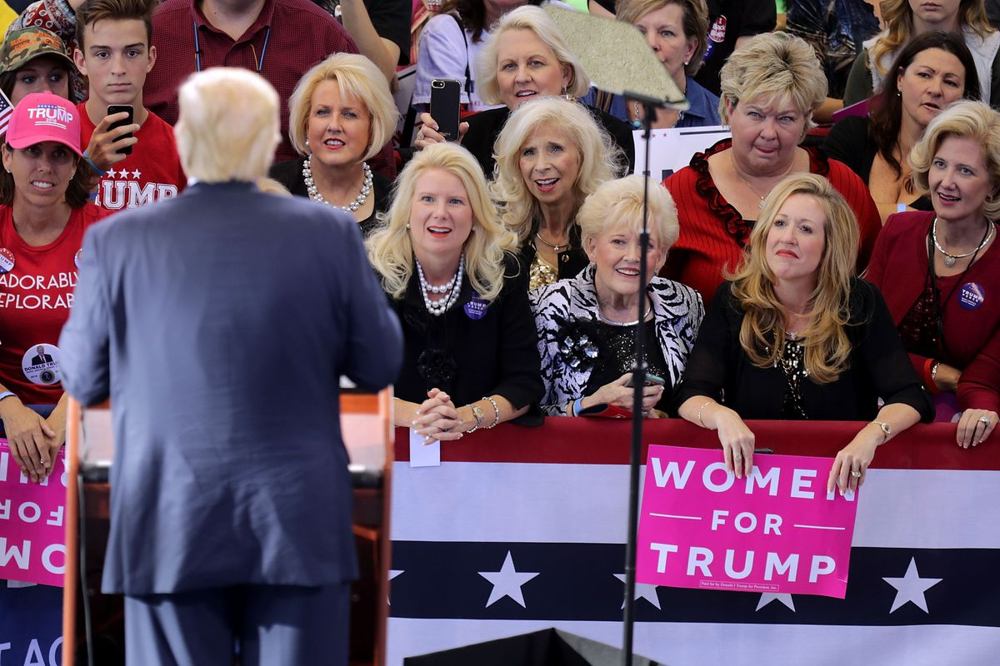

kompromat
THE TOP MONTHLY#TRUMPRUSSIASTORY|MARCH 2018
How A Player In The Trump-Russia Scandal Led A Double Life As An American Spy
Felix Sater has been cast as a Russian mafioso, a career criminal, and a key business associate of President Donald Trump — but he spent more than two decades as an intelligence asset who helped the US government track terrorists and mobsters. “Greed is my go-to weapon.” In the sprawling Trump-Russia investigation, one name constantly pops up: Felix Sater. In story after story, Sater is described as Donald Trump’s former business partner, a convicted stock swindler who was born in the Soviet Union, worked in Russia, tried to win Trump a deal in Moscow, and even helped broker a Ukrainian peace plan that Vladimir Putin would have loved.
Basically, he’s portrayed as something just short of a Russian spy.
Continue Reading

The Art of the Steal
Dear Mr. President,
I recently visited the Library of Congress in Washington D.C. and stood in awe before the collection of books once belonging to Thomas Jefferson; hundreds of books that Jefferson not only owned, but read. It comprised of Homer, Adair, Aristotle, etc., every dictionary and encyclopedia imaginable, and countless books on law, ethics, philosophy, and so on. Jefferson, along with the other founding fathers, soaked up knowledge like a sponge to construct the foundation of our beloved country. And while I was standing there, it dawned on me that you, Mr. Trump, actually equate your presidency to Jefferson’s. You believe your existence parallels the most glorious minds who have ever walked this earth; how dare you, Mr. President. You my dear, are the furthest thing from brilliant. You are a disgraceful troglodyte, who lives in a cave of a Twitter war, ranting away on how the world owes you everything, and forsaking any responsibility for the chaos you have created. You are nothing more than an accidental president, a creation of tweets, reality television, and Russian data mining. You so desire to be revered like Obama, yet you barely have a grasp on the English language, have no appreciation of history, any understanding of government, law, or world affairs, except when it comes to judging Miss Universe. You are neither a patriot nor a real American, rather a snarly, contemptuous goon, who only knows how to buy his way to a false declaration of respect by pledging allegiance to Putin. You are tacky and cheap, an annoying twenty dollar date, who talks about himself the whole time at dinner.
What helped get you elected, will also be your demise; you duped Americans in the flyover states who were so hungry for change, they were willing to try just about anything-- even a sexist, egotistical bigot, who insulted their moral and religious parameters. People who are familiar with you in New York City, have wanted nothing to do with you for decades. During the second presidential debate of 2016, Michael Bloomberg called you out for what you are-- a con, who was desperately seeking a new group of dopes. But make no mistake dear, the Americans in the Midwest and the South that you conned are no dopes; they are hardworking, smart people who seem to have finally caught up to where New Yorkers have been for years. Your orange glow is waning and the loud drivel that spews out of your mouth no longer seems like erudition to them, rather the ramblings of a madman who is literally promising to turn coal into diamonds. So while you tweet away in the dark chamber of hate you’ve created for yourself at 3am, just remember this-- you may be a president for now, but you will never be one of THE presidents of the United States. All 44 presidents who came before you were worthy of their titles. You are worthy of nothing except having the skills to buy your way to the White House with the help of KGB expertise. Your very existence is an insult to our democracy and even the very worst dictators of regimes across the globe think you’re a fool. You have spent your entire adult life preying on victims who mistook your ostentatious lifestyle for a gateway to prosperity, dangling glitz and fast talk in their faces, while robbing them blind; and as soon as you ran out of professionals to hoodwink, you moved on to the taxpayers, all the way to the Oval Office.
The problem is, and you once said this yourself, "You can't con people, at least not for long. You can create excitement, you can do wonderful promotion and get all kinds of press, and you can throw in a little hyperbole. But if you don't deliver the goods, people will eventually catch on." More and more, the people who voted for you are realizing that they have nothing to be excited about; that you have no "goods" to deliver. The patina of shit you're covered in is starting to stink and soon your supporters won't be able to tolerate it. Your legacy will be stealing a presidential election with the help of a foreign adversary, and sending out hate tweets about the person you stole it from. You lack empathy or remorse for harming the people who devoted themselves to you because this sociopathic behavior had worked for you your whole life as a businessman. But Mr. President, you are now standing on the world stage, 365 days of the year; and now everyone can observe your nonsensical tyranny. You don't have that much time left dear, before everyone labels you as the Emperor who was fond of new clothes, especially the ones Made in China.

As we are on the precipice of war with North Korea, a Constitutional crisis, and losing our planet to the effects of climate change, I often wonder, what happened to the good people of this country? Have they simply abandoned their lifelong values, only to adopt new ones admired by bedlamites, or is the shift in this country rooted in something much deeper than many of us are able to recognize? The day after the election, I was in complete shock and by Thanksgiving, I was still mystified; the extreme adulation that Trump supporters offered then, and still offer now, made no sense to me, especially from the women. Being from New York and a woman myself, I have many times endured the creepiness of perverts making demeaning remarks about my appearance, and have even had my genitals groped on the subway. Over the years, I have seen Trump make remarks about women, rating their “hotness” and letting the world know who he would or would not sleep with, depending on whether or not they satisfied his standards of beauty; and from his interaction with women, it is very apparent that he believes women were put on this earth to look good in a bikini and prance around half-naked on stage. Yet this did not stop women from voting for him.